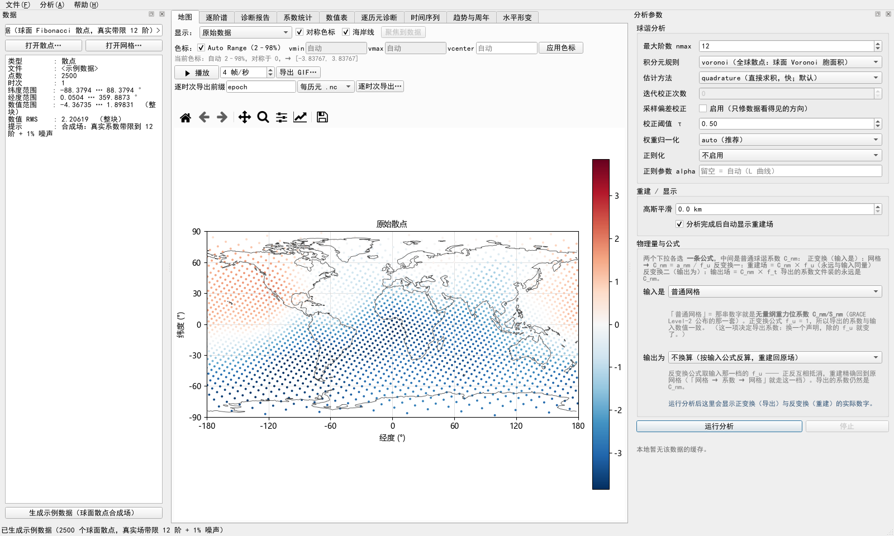
图 1 整体界面：左侧数据面板 / 中间九个页签 / 右侧分析参数 / 底部状态栏
| 0 三十秒上手 | 1 安装 | 2 启动 |
| 3 界面总览 | 3.2 九个页签各看什么 | 4 操作流程 |
| 4.4 多时次数据：一次解完 | 4.5 逐历元诊断 | 4.6 时间序列 |
| 4.7 趋势与周年 | 4.8 水平形变 | 5 参数含义 |
| 6 怎么读诊断报告 | 7 导出 | 8 常见问题 |
| 9 作者与联系方式 | 10 致谢 |
auto、估计方法
quadrature（直接求积），一次投影就出结果；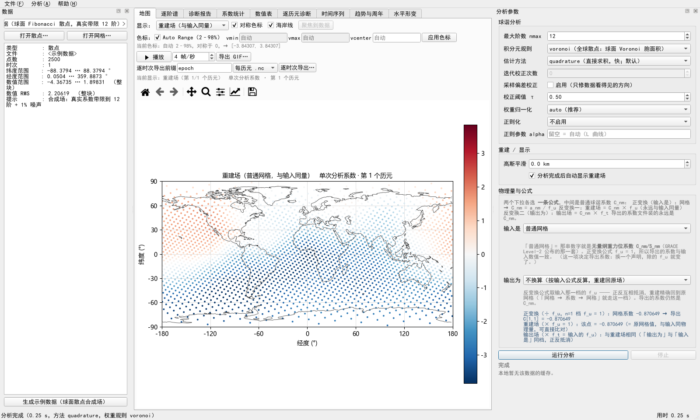
图 2 地图页签：原始 / 重建场 / 差值 / 输出场，四选一
SHKit 以 Windows 安装程序形式发布，装完即用：
SHKit_Setup_v2.0.1.exe；C:\Program Files\SHKit）；| 项目 | 要求 / 说明 |
|---|---|
| 操作系统 | Windows 10 / 11（64 位） |
| 内存 | 建议 8 GB 以上；区域数据、高阶（nmax > 100）时更吃内存 |
| 磁盘占用 | 约 400 MB（安装时预留 600 MB 更稳妥） |
| 权限 | 安装到 Program Files 需要管理员确认；装到用户目录则不需要 |
| 卸载 | 「设置 → 应用」或开始菜单里的卸载项，按向导走完即可 |
安装完成后，用下面任意一种方式打开：
SHKit.exe。程序完全离线运行，不会联网、不上传任何数据。首次打开建议先点 「生成示例数据」，用内置算例把整条流程走一遍（本文档图 1、图 2、图 7、 图 19、图 24 ~ 图 26 就是这个算例的截图），然后再打开自己的数据。
窗口分四块：
| 区域 | 内容 |
|---|---|
| 左：数据 | 打开散点 / 打开网格、NetCDF 变量选择、时次滑块、 数据摘要（时间跨度、当前时次的数值范围与 RMS、缺测个数、变量单位、提示） |
| 中：页签 | 地图 / 逐阶谱 / 诊断报告 / 系数统计 / 数值表 / 逐历元诊断 / 时间序列 / 趋势与周年 / 水平形变（九个，见 3.2） |
| 右：分析参数 | 球谐分析参数 + 物理量与公式 + 重建显示选项 + 运行 / 停止 + 进度条 |
| 底：状态栏 | 当前状态、方法、权重规则、用时 |
下面两张是原始像素的面板特写（整窗缩到本页宽度后小字会变小，所以每个功能区 单独给一张按原尺寸显示的图）。
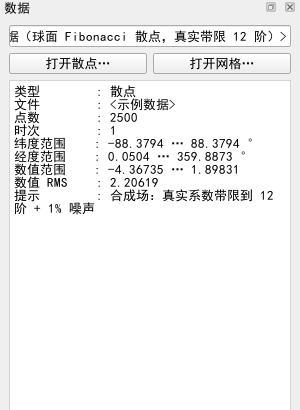
图 3 左侧数据面板特写：打开散点/网格、生成示例数据、时次滑块与数据摘要
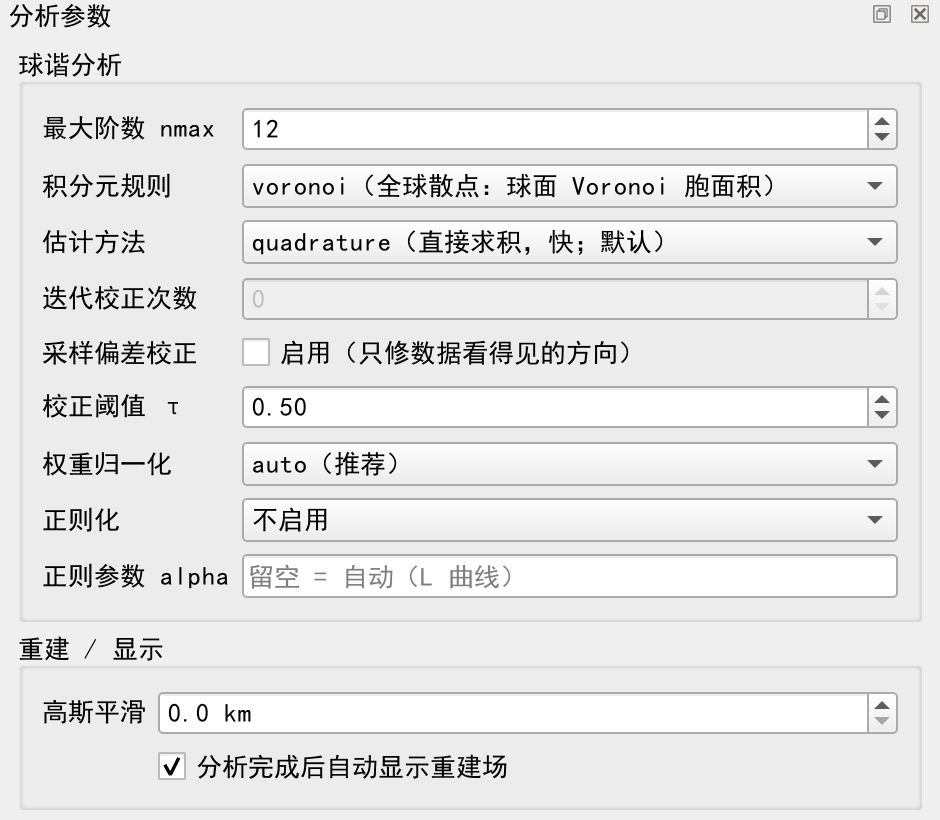
图 4 右侧分析参数面板特写：nmax、积分元规则、估计方法、物理量与两条公式、运行/停止与进度
「地图」页签顶部的下拉可以在四个场之间切换：原始数据、 重建场（与输入同物理量）、差值（原始 − 重建，同物理量）、 输出场（按「输出为」换算出来的另一个物理量）。
地图页上方最多有四行控件，都只影响显示、不影响分析结果：
| 行 | 什么时候出现 | 作用 |
|---|---|---|
| 色标控件 | 总是 | Auto Range (2–98%) /
vmin / vmax / vcenter +「应用色标」，
另有「对称色标」「海岸线」「取消聚焦」 |
| 色标说明 | 总是 | 单独一行写明当前色标是按什么定出来的 （例如「自动 2–98%，对称于 0，→ [−0.0753, 0.0753]」） |
| 时间行 | 数据带时间轴时 | 时次滑块、◀/▶ 逐步、范围起止、 「全部」、当前时次的日期与十进制年 |
| 播放行 | 同上 | 播放/暂停、帧率、导出 GIF…； 下一行是逐时次导出（前缀、格式、按钮） |
鼠标停在地图上会显示该点的原始值、重建值、经纬度；网格数据吸附到最近格点， 散点数据吸附到最近点（并给出点号）；多时次数据还会带上「第 k / N 个时次（日期）」。
「生成示例数据」按钮会造一份 2500 点的球面 Fibonacci 散点合成场 （真实带限 12 阶 + 1% 噪声），不需要任何数据文件就能把整个流程走一遍 —— 本文档里图 1、图 2、图 7、图 19、图 24 ~ 图 26就是走这个算例的真实截图。
| 菜单项 | 作用 |
|---|---|
| 帮助 → 📘 使用说明（F1） | 打开本页（截图版 HTML， 可滚动、可最大化） |
| 帮助 → ℹ️ 关于 / 作者信息 | 作者、单位、邮箱、电话、公众号 与二维码，以及六步快速上手 |
| 帮助 → 📱 课题组公众号 | 放大显示公众号二维码 |
| 帮助 → 第三方许可与声明… | 本程序使用的第三方组件清单 |
| 帮助 → GNU LGPL v3 / GPL v3 全文… | 随程序分发的许可全文 |
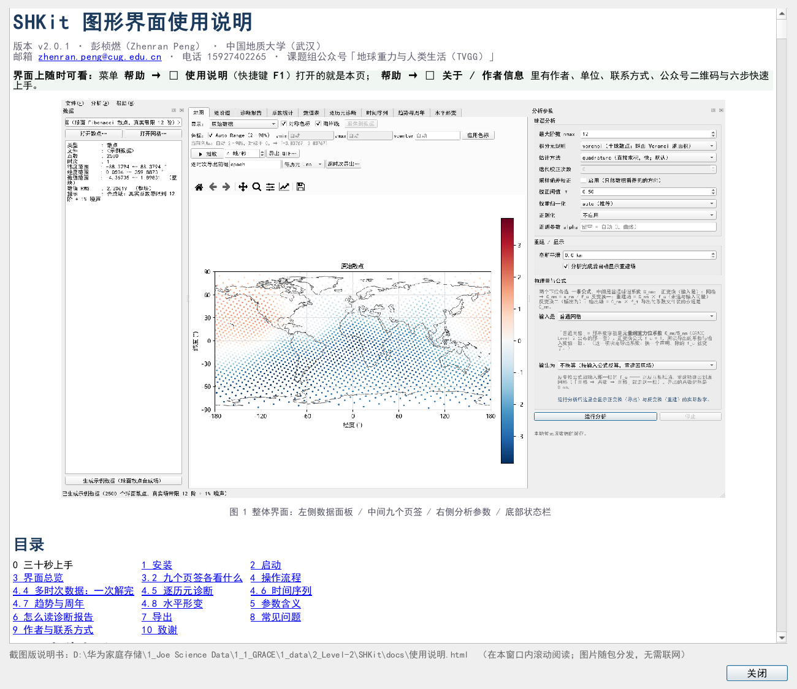
图 5 使用说明窗口：可滚动、可最大化、离线可读
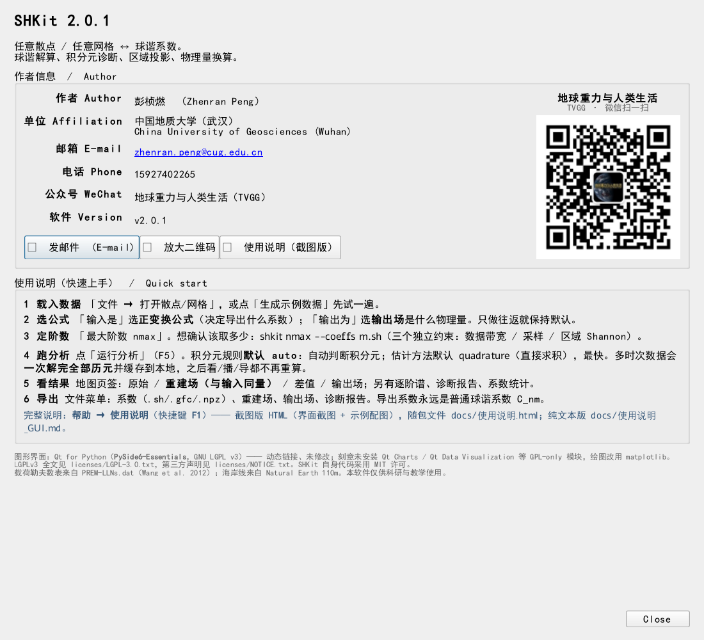
图 6 帮助 → 关于 / 作者信息：作者与联系方式、公众号二维码、六步快速上手
| 页签 | 内容 | 什么时候看 |
|---|---|---|
| 地图 | 四个场的平面图 + 色标 + 悬停读数 | 看空间分布；每次都从这张图开始 |
| 逐阶谱 | 逐阶功率与拟合残差 | 判断解到几阶开始被噪声接管 |
| 诊断报告 | 估计方法、求积完备性、覆盖率、条件数、推荐 nmax、 中文警告 | 每次分析后都该看（见第 6 节） |
| 系数统计 | C_nm / S_nm 的数值表 | 核对某几个系数、看奇异项 |
| 数值表 | 整块场（或整份散点）的数值表，可复制、可导出 CSV | 要把结果拿进别的软件里算 |
| 逐历元诊断 | 多时次数据的逐历元解 + 相对 RMSE、C00、残差 RMS、 离群标记 | 批量处理时挑出坏历元；点一行跳到那个历元的地图 |
| 时间序列 | 单点或区域平均的时间曲线 + 趋势线 + 周年拟合 + 残差带宽 | 看某个地方随时间怎么变 |
| 趋势与周年 | 逐格点的趋势场，以及每个拟合周期的振幅场与 相位场（勾「含半年周期」会多出半年那一对） | 要一张「变化速率图」或「季节性振幅图」时 |
| 水平形变 | 北向 / 东向位移分量与矢量场 | 看质量迁移引起的水平位移（见 4.8） |
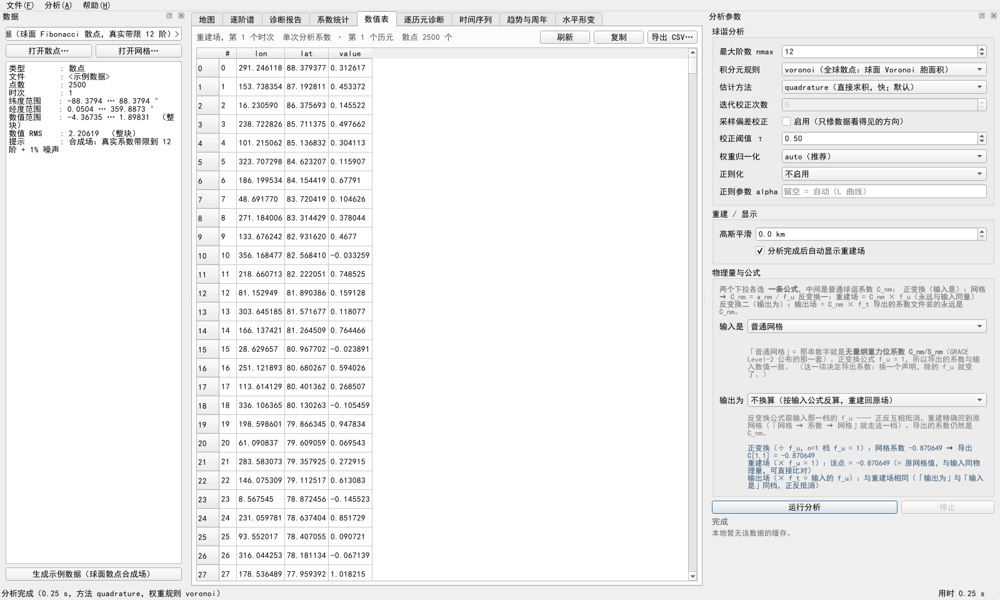
图 7 数值表页签：网格数据是「行=纬、列=经」，可整体复制成表格 或导出 CSV（散点数据则是逐点一行）
csv / txt / dat / tsv / npy / xlsx。默认按
「第 1 列经度、第 2 列纬度、第 3 列数值」解释，带表头时优先按列名匹配；读入时的
推断结果写在左侧数据摘要的「提示」里 —— 先看一眼提示，列认错了就在文件里
调整列顺序（或补一行列名）后重新打开。voronoi；
只覆盖一个区域 → delaunay。nmax ≲ √(N/4)（有噪声时按此保守取），
「诊断报告」里会给出推荐 nmax。散点的多时次（同一个点、多个历元）：支持。写成下面任一种即可 ——
| 写法 | 例子 |
|---|---|
矩阵 .npy（推荐，精度无损） | (N, 2+ntime)：
第 1 列经度、第 2 列纬度、其余列 = 各历元 |
宽表 csv/txt，列名 value, value1, value2… |
本软件「逐时次导出」写出来的就是这个格式 |
宽表 csv/txt，列名就是日期 |
lon,lat,2002-01-18,2002-02-17,…（2002-01、
2002 也行）→ 时间轴直接用这些日期，趋势/周年页因此拟合得起来 |
宽表 csv/txt，列名任意 |
程序按列名/位置自动认；认不出时只会取第一列，并在左侧「提示」里写明还剩下哪些
列没用上（脚本/API 里可以用 val_col=["e2002","e2003"] 指定） |
读进来后和网格一样：地图上出现时间行，「运行分析」一次解完全部历元， 地图 / 播放 / 导出 GIF / 逐时次导出都按历元走。
⚠️ 长表（tidy）格式不支持：一行一个「点 × 历元」、另有一列日期的表，会被 当成宽表解释（只取第一列数值）。这种情况软件会给出明确警告并提示先透视成宽表。
nc / grd / npy / csv / txt。选 .nc
时会出现「变量」下拉框，选好后点「载入」。纬度若原本是降序，读取时会自动翻转成
升序并在摘要里注明。nlon == 2·nlat、nlat 为偶数）会
自动选 dh；其他情况选 grid（精确球带面积）。大文件打开得很快（懒加载）：多时次 .nc 打开时只读第 1 个
时次（外加文件头与坐标轴），其余时次在后台按块补。实测那份
720×1440×256（1.06 GB）的 CSR mascon：首屏 0.61 s，整块读要 2.60 s，
补齐后两者逐值一致（省的是时间，不是精度）。载入完成后状态栏会写
「其余 N 个时次后台读取中…」，补齐完自动消失 —— 这段时间里地图、色标、时次滑块、
播放、逐时次导出都能正常用。只有"必须看全部历元"的操作（批量分析、趋势/周年场、
时间序列）才会先补齐并显示进度；时间序列页在补齐完成前只画占位并写明原因，
不会为了让占位好看去读 1 GB。
左侧「数据摘要」里的数值范围 / RMS 是当前时次的（行尾写明 「（第 k/N 个时次）」），切时次时会跟着刷新。多时次文件对整块求范围既不直观 （几十个完全不同的场被压成一个数字）又很贵；只有单时次数据才写「（整块）」。 载入时的其它信息（时间轴跨度、网格尺寸、缺测个数、变量单位、提示）与当前时次无关， 不随之变化。
如果打开的数据带时间维（多时次网格）或有多列数值（散点的多历元），地图页上方会 出现时间行与播放行：
一次解完所有时次：多时次数据点「运行分析」就会一次解完全部历元 （也可以切到逐历元诊断页点批量分析，两者是同一个求解，结果逐位相同）： 积分权重与法方程只组装一次，所以历元越多省得越多（实测 203 个历元、1° 全球、 nmax = 60：逐历元点 200 多次约 13 秒，批量一次约 0.5 秒）。
结果会缓存到本地：逐历元系数写成数据文件旁边的
<文件名>.shkit-coeffs.npz（数据目录不可写就退到用户缓存目录，并在
状态栏说明）。键里含源文件的 size / mtime / 前 64 KB 的内容指纹与所有影响系数
的参数（含高斯平滑半径与输入/输出物理量），任一项不同就不算命中、重算并覆盖 ——
所以不会出现"改了参数却拿到旧结果"。键里不含路径，数据连同旁边的缓存拷到别的
目录仍然命中。下次打开同一份数据（同一套参数）直接读缓存，不用再等一次求解（进度条推到
100% 并注明"本次未重算"）。
缓存占多大、会不会一直涨：数据旁边一个数据集一份（改参数覆盖同一个文件， 单份上限 256 MB，超了不写盘并说明）；用户缓存目录（数据目录不可写时才用）是按 "数据集 × 参数"散列的，本来会越攒越多 —— 现在有 512 MB 总量上限，每次写盘后 按最久未用自动删到 80%，并写明删了几份、释放多少。参考：nmax = 60 / 256 历元的一份实测 7.0 MB。文件 → 「本地缓存…」可以看清占用并就地清理（删除当前数据的缓存 / 清空用户缓存目录）—— 缓存只是省时间，删掉不影响已经算出来的结果；参数面板底部 常驻一行显示当前占用。
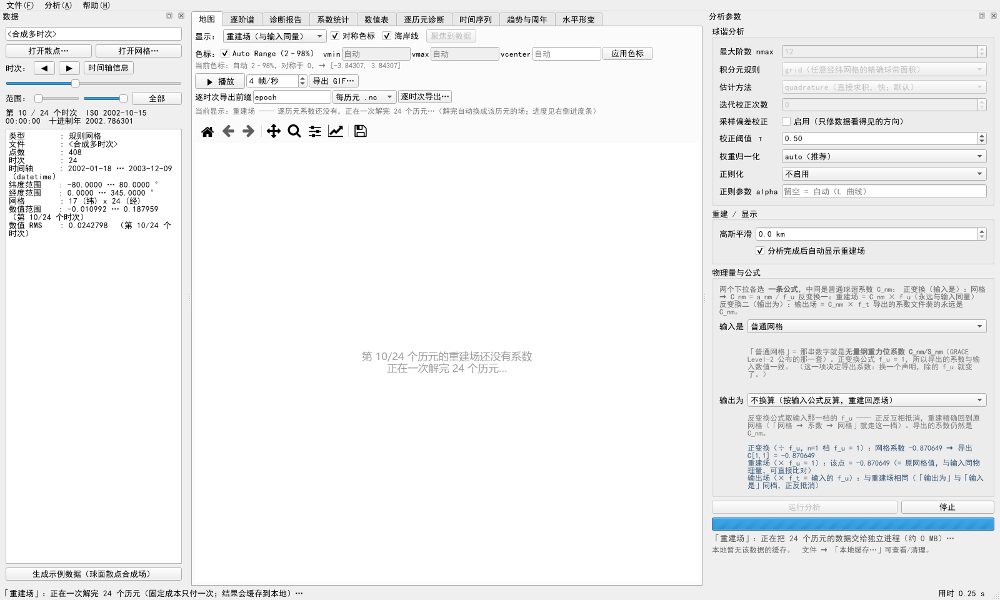
图 15 多时次数据：时次滑块 / 范围 / 播放与 GIF 导出 / 逐时次导出 / 色标面板都在地图页上方一行
批量分析完成后，表格里每个历元一行：序号、日期、相对 RMSE、 C00、残差 RMS、可疑标记。相对残差明显偏大的历元会被标出来（用中位数绝对偏差 判据），但只高亮、不自动剔除 —— 要不要丢掉一个历元是科学判断，不是软件的 默认动作；关掉「高亮离群历元」开关即可取消标记。
点表格里的任意一行会跳到那个历元的地图页，便于当场看它长什么样。 表格上方还会写明「权重与法方程只算了几次」，以及一键把整张表导出成 CSV。
分析在独立子进程里跑（默认开启，右侧面板有开关）：这样即使求解过程出问题， 界面本身也不会被拖垮。若系统环境不支持，程序会回退到线程并写明原因， 而不是悄悄换一种方式。
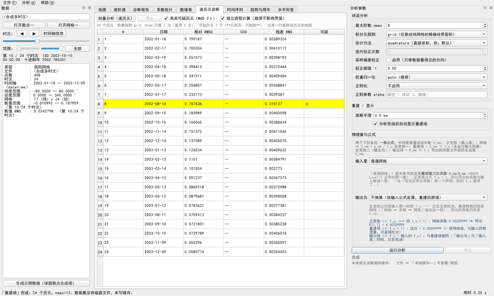
图 16 逐历元诊断页：每个历元一行（日期、相对 RMSE、C00、残差 RMS、可疑），离群历元只高亮、不自动剔除
选单点或区域：
勾上「拟合」会叠加趋势线与周年拟合曲线，并给出趋势（每年变化多少）、 周年振幅与残差 RMS；横轴是十进制年。拟合坐标用的是真实经过时间， 历元不等间隔或有缺测都按真实时间处理，不会把它们当作等间隔序号。
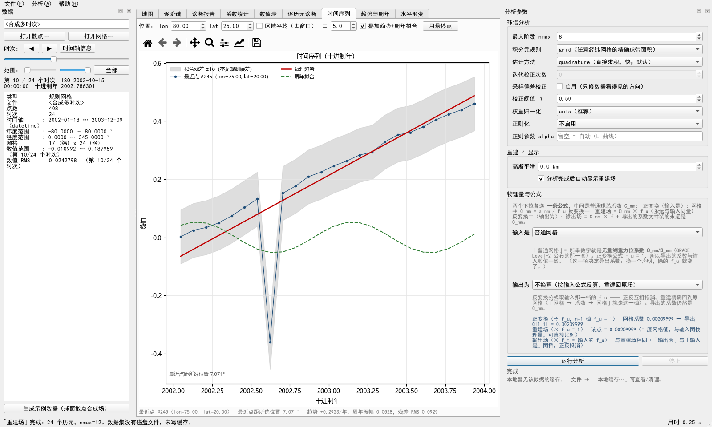
图 17 时间序列页：单点或区域平均曲线 + 趋势线 + 周年拟合 + 残差带宽，横轴是十进制年
对每个格点做同样的时间拟合，给出：趋势场（每年），以及 每一个拟合了的周期各一对 振幅场 / 相位场（峰值出现在一年中的第几天）。 只拟合年周期时是 3 张图；勾上「含半年周期」就是 5 张（多出半年振幅场与半年相位场）。
页面顶部会写明条件数、拟合了哪些周期、以及「有多少个格点参与了拟合」。 数据没有日期时程序会拒绝拟合并说明原因，而不是按序号假装等间隔。 右上角的「海岸线」开关给这些图叠加随程序分发的离线海岸线（不联网，只影响显示）。
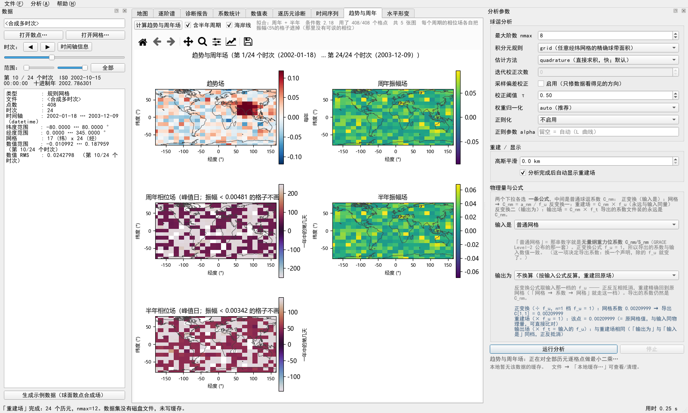
图 18 趋势与周年页：趋势场 / 周年振幅场 / 周年相位场；相位场把振幅很小的格子遮掉（那里没有可谈的相位）
同样的系数还能给出水平地表位移。这一页是可滚动的三行（图按原尺寸画，不压扁）：
| 行 | 内容 |
|---|---|
| 北分量 u_N | 向北为正；与东分量共用同一个对称色标， 这样两行才能横向比较（各画各的色标会读成"东向比北向小"） |
| 东分量 u_E | 向东为正 |
| 水平模 |u_h| | 总位移大小（顺序色标，从 0 起）， 叠加矢量场并带一把比例尺：只有箭头没有比例尺的矢量图没法定量读， 只有模又丢掉方向，所以两者放在同一张图上。箭头与左下角的比例尺文字都是 白色（箭头带一层很细的深色描边，落在亮色格子上也看得清） |
这一页在你点「计算水平形变」之前不会计算。运行分析、批量分析、拖时次、播放 都不会顺手把这张图算掉：它们只把旧图作废，并在页脚写明"点「计算水平形变」重算"。 点了之后：计算在后台线程 / 独立进程里跑（进度条按"阶 m / 点块"报，随时可以点 「停止」取消）—— 位系数的球面梯度不是逐阶乘法：规则网格走经度 FFT（实测 720×1440、 nmax=60 是 0.08 秒 / 历元），但散点只能直接扫，同样规模要 79 秒 / 历元； 换时次 / 重新分析 → 旧图作废，再点一次按当前历元重算；「海岸线」开关只重画， 不重算。
可以导出（文件菜单两项，每个历元写 3 个文件：u_N / u_E / |u_h|，单位 m）： 导出水平形变（当前历元）… 写当前时次的 3 个文件；导出水平形变（时间窗内 逐时次）… 按时间窗口每个时次各 3 个文件，可暂停 / 继续 / 停止。网格写 .nc （一个文件一个分量），散点写 .csv（lon,lat,值）。散点上会先给出耗时估算 （例如"每个历元约 79 秒，256 个历元约 5.6 小时"）让你决定是否继续。
本页有自己的一套色标，不跟随地图页的色标（地图页的量级常常是原始数据的， 例如 EWH 的 ±700 cm；套到毫米级的形变分量上会把三张图压成一片颜色，看起来就是 "画不出来"）。本页按形变自己的数据自动定 2–98%，两个分量对称于 0（可横向比较）， 水平模从 0 起。
看这张图时注意三点：
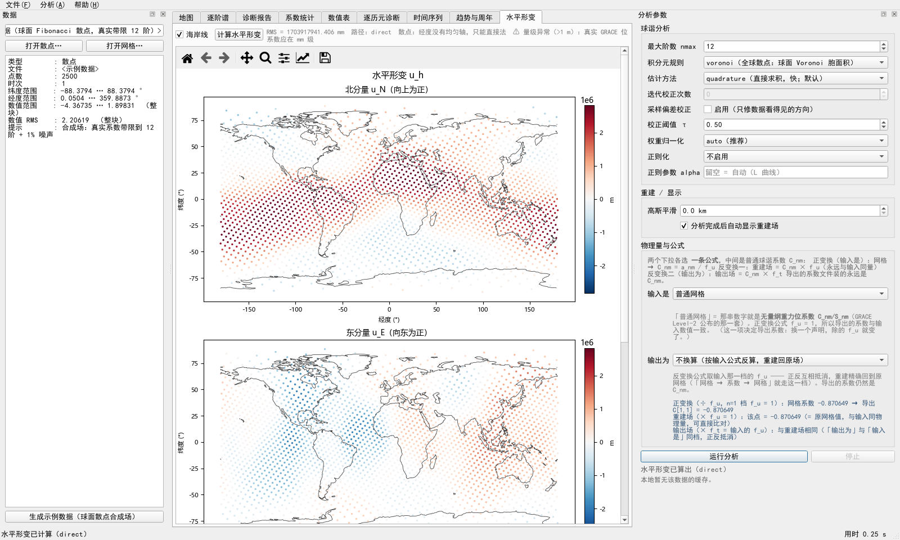
图 19 水平形变页：北向 / 东向分量与矢量场（极点不画箭头）
delaunay。不要用 voronoi ——
球面 Voronoi 剖分永远铺满整个球面，区域边界点的胞会膨胀到球的对侧。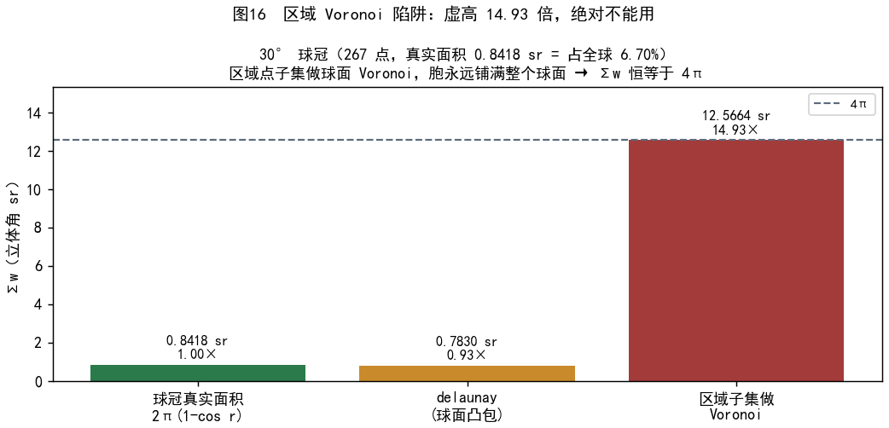
图 8 区域点集绝不能做球面 Voronoi：Σw 恒等于 4π，面积虚高 14.93 倍
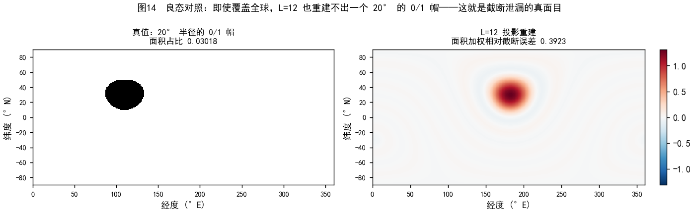
图 9 截断泄漏：即使覆盖全球，L=12 也重建不出一个 20° 的 0/1 帽
所以本程序对区域数据是如实报告、不假装能反演：它会给出覆盖率、 截断泄漏的量级和中文警告，让你一眼看出「这不是全球解」。区域反演属于另一个层次的 问题（数据本身在数学上欠定），不在本程序的范围里。
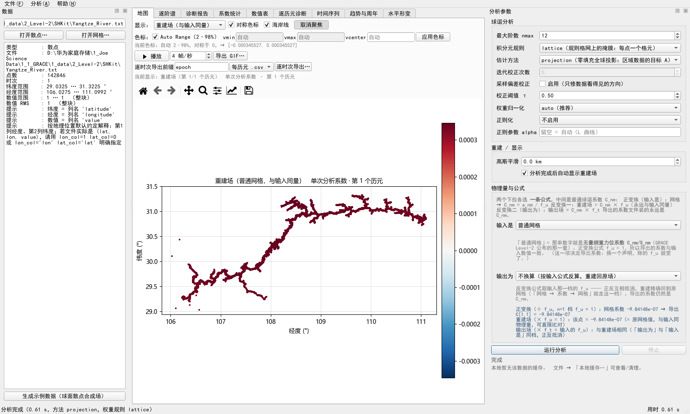
图 10 长江流域掩膜（142 846 点）的投影重建场
上面这张（图 10）就是区域数据的真实截图：长江流域 0/1 掩膜（142 846 点），
nmax = 12、规则 lattice、方法 projection。
注意色标只有 ±3×10⁻⁴ —— 区域数据得到的「全球系数」在区域外几乎处处为 0。
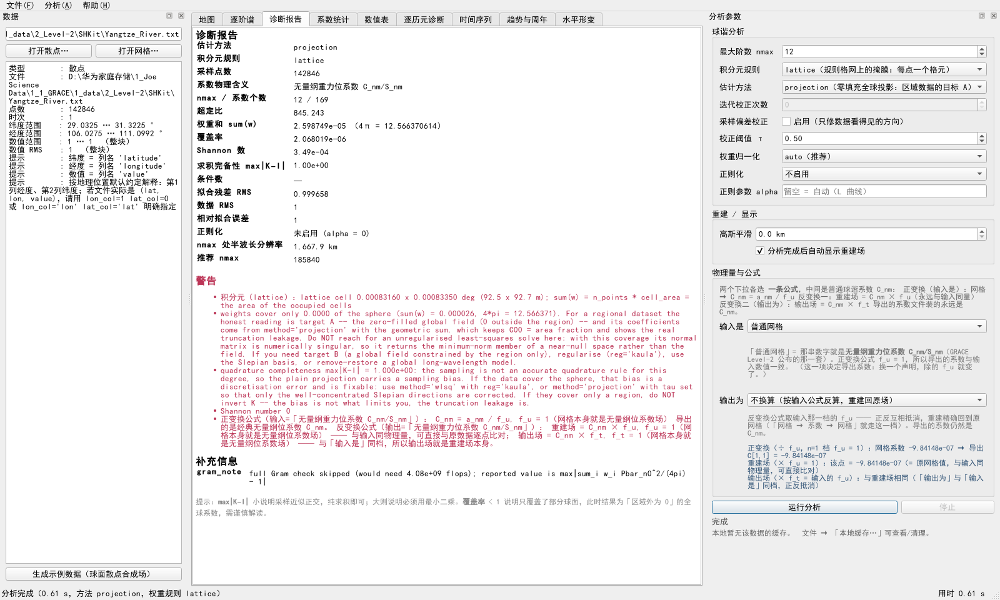
图 11 区域数据用 projection：报告里给出覆盖率与 C00 一致性检查
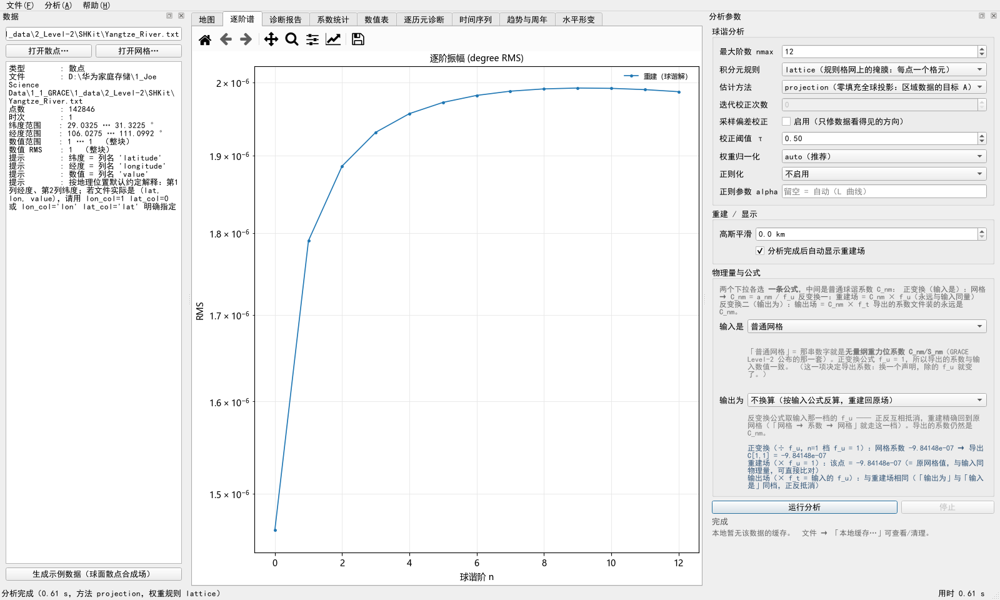
图 12 区域数据的逐阶谱：低阶几乎全被截断泄漏吃掉
cg（图 13、图 14）：
C00 与点集加权均值不再一致（软件会明确报警），重建场整体偏移 ——
这也是「一定要看诊断报告」的原因。
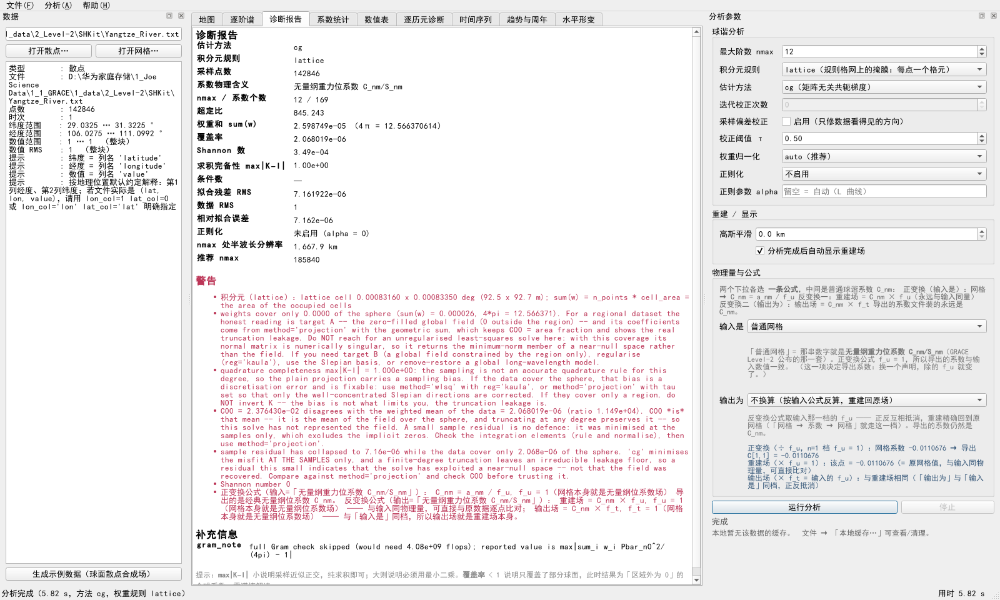
图 13 同一份区域数据改用 cg：C00 与加权均值不一致，警告触发
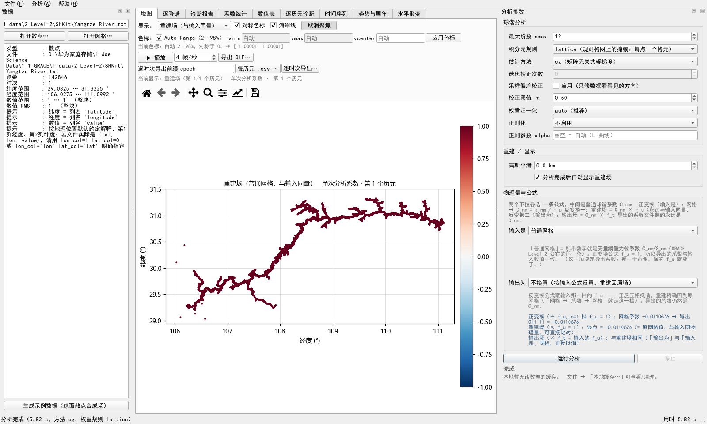
图 14 cg 的 C00 偏离使重建场整体偏移——这就是必须看报告的理由
| 参数 | 说明 |
|---|---|
| 最大阶数 nmax | 解到几阶，未知数 (nmax+1)² 个。
拿不准先用默认值跑一次：诊断报告里的「推荐 nmax」就是按点数与覆盖率
给出的经验上限 |
| 积分元规则 | 默认 auto：按采样自动判断
（全球等经纬网格 dh／完整网格 grid／规则格网上的掩膜
lattice／全球散点 voronoi／区域散点
delaunay）。见 5.1 |
| 估计方法 | 默认 quadrature（直接求积），
效率优先：一次加权投影，最快。可选 iterative（求积 + 迭代校正）、
projection（区域数据的正确目标：区域外按 0 处理的全球投影）、
wlsq（加权最小二乘）、cg（矩阵无关共轭梯度，省内存）。
⚠️ 用 quadrature 时若采样不是好的求积规则会有混叠 —— 看诊断报告里的
gram max|K−I|（> 1e-2 就改用 wlsq 或
cg） |
| 迭代校正次数 | 默认 0。只在「估计方法 = iterative」 时可用（其它方法下这一项是灰的）。实测在散点上 1 次就能把往返误差改善 ~250 倍，代价是多扫一遍数据 |
| 权重归一化 | auto 推荐；global 强制
Σw = 4π（区域外为 0 的读法）；region 保留几何面积 |
| 输入是 | 【正变换公式】载入的网格/散点是什么（普通网格 /
geoid / EWH / 径向形变，默认「普通网格」）。它决定
C_nm = a_nm / f_u 里的 f_u，所以会改变导出的系数，
见 5.2 |
| 正则化 | 区域/病态数据必须用。kaula 是量纲无关的
逐阶幂律先验 |
| 正则参数 alpha | 留空 = 自动（L 曲线）；也可手填 |
| 高斯平滑 | 各向同性高斯滤波半径（0.5 幅度半宽），0 = 不平滑。 分析完成后直接乘到系数上：导出的系数、逐阶谱、系数表、重建场/输出场都用 同一个平滑结果，只施加一次 |
| 输出为 | 【反变换公式·输出场】输出场要换成哪个物理量
（不换算 / EWH / geoid / 普通球谐系数 / 径向形变），决定
输出场 = C_nm × f_t 里的 f_t。它不改变导出的系数
（永远是 C_nm），也不改变重建场；控件下方会实时显示两条公式的
实际数字 |
| 在独立子进程中运行 | 默认开启。批量逐历元分析放在独立进程里 跑：求解出问题也不会连带界面。环境不支持时会回退到线程并写明原因， 不会悄悄换方式；两种方式的结果逐值相同 |
| 控件 | 说明 |
|---|---|
| 色标 · Auto Range | 按 2% ~ 98% 分位自动定色标范围：比 min/max 稳健，不会被个别离群格点拉平整张图 |
| 色标 · vmin / vmax | 手填后点应用色标生效（作用于地图页与趋势页）； vcenter 用来把「零」放在色标中间（例如正负异常图）。 ⚠️ 水平形变页有自己的色标，不跟随这里 |
| 对称色标 | 强制 vmin = −vmax。手填了 vcenter 时它会自动取消并在 界面上说明谁在生效（避免「以为对称、其实不是」） |
| 海岸线 / 取消聚焦 | 海岸线来自随程序分发的离线数据，不需要联网 （地图上只画海岸线、不画国界）； 在地图上框选/滚轮放大后，用「取消聚焦」回到全球 |
| 时次滑块 / 范围 / 全部 | 只决定「当前看哪个（哪些）时次」。 单时次分析用的是滑块那一个时次；批量分析与时间序列用「范围」； 左边的数据摘要里会写明时间跨度，**认不出日期时会明说**； 摘要里的数值范围 / RMS 也是**所看时次**的（行尾写明「第 k/N 个时次」） |
| ⏱ 时间轴信息 | 弹出时间轴摘要：历元数、时间来源、跨度、 间隔的中位/最小/最大、是否等间隔、疑似缺测段数与最长间隔 |
| 帧率 / 导出 GIF | 播放速度与动画导出。GIF 的帧数等于当前范围的 历元数 |
| 逐时次导出 | 把范围内每个时次各写一个文件；可暂停/继续/停止 |
C_nm × f_u），
所以能直接和原始网格逐点比对，差值图、残差 RMS 都用它；输出场是按「输出为」
换算出来的另一个物理量（C_nm × f_t）。选「输出为 = 不换算」时两者是同一个场。
| 规则 | 用在哪 |
|---|---|
dh | 全球等经纬网格（nlon=2·nlat），精确到
nlat/2−1 阶 |
grid | 任意经纬网格（含区域、非等间隔），精确球带面积 |
voronoi | 全球准均匀散点，球面 Voronoi 胞面积 |
delaunay | 区域散点，球面 Delaunay 1/3 |
uniform | 等面积采样；不应用于任意散点 （实测差 10 倍以上） |
管道里只有两条公式，中间是普通球谐系数 C_nm
（= 无量纲重力位系数 C_nm/S_nm，GRACE Level-2 公布的那一套）：
正变换（输入是）： 输入网格 ──÷ f_u──> C_nm = a_nm / f_u 反变换一（永远）： 重建场 = C_nm × f_u ← 与输入同物理量，可直接比对 反变换二（输出为）： 输出场 = C_nm × f_t ← 按「输出为」选的物理量 导出的系数文件 = C_nm
a_nm 是该网格自身的球谐系数（由数据与积分元唯一决定）。
f_u 由「输入是」选的物理量决定：
| 输入是 | 正变换公式 f_u |
|---|---|
| 普通网格（默认） | 1（网格本身就是那套无量纲位系数场） |
| 水准面高 ΔN (geoid) | R = 6378136.46 m（常数，不逐阶） |
| 等效水高 EWH | Aₙ = R·ρ̄/(3ρ_w) · (2n+1)/(1+k′ₙ)（逐阶） |
| 径向形变 u_r | R·h′ₙ/(1+k′ₙ)（逐阶；h′₀ = 0，
0 阶不可反推） |
所以改「输入是」会改变导出的系数。同一块网格声明成 geoid 和声明成 EWH 是 两个不同的物理场，除的因子不同。同一份数据的实测结果：
输入是 导出 C[2,1] 普通网格（默认） -1.849162537627e-01 （f_u = 1，恒等） geoid -2.899220719443e-08 （÷ R） EWH -2.190855366513e-09 （÷ A₂） 径向形变 u_r → 报错：h′₀ = 0，第 0 阶信息已丢失
geoid 与 EWH 之差在 n=2 阶是 A₂/R ≈ 13.23 倍，而且逐阶不同
（Aₙ 不是常数）：
n=1: ewh/geoid = 1.8600e-01 n=3: 6.2467e-02 n=2: ewh/geoid = 7.5567e-02 n=6: 3.8056e-02 （跨 4.9 倍）
改「输出为」则既不改变导出的系数、也不改变重建场，它只换输出场：
输入=EWH，输出=EWH → 输出场 = 重建场（f_t = f_u，正反抵消） 输入=EWH，输出=geoid → 输出场 = C_nm × R（重建场仍是 EWH，一动不动） 输入=EWH，输出=普通球谐系数 → 输出场 = C_nm（f_t = 1）
实测（同一份数据，逐个改「输出为」）—— 导出系数与重建场都逐位不变， 只有输出场在动：
输入=ewh, 输出=ewh 导出 C[2,1] = -2.190855366513e-09 重建场 RMS = 2.206131e+00 输出场 RMS = 2.206131e+00 输入=ewh, 输出=geoid 导出 C[2,1] = -2.190855366513e-09 重建场 RMS = 2.206131e+00 输出场 RMS = 8.274777e-01 输入=ewh, 输出=普通球谐系数 导出 C[2,1] = -2.190855366513e-09 重建场 RMS = 2.206131e+00 输出场 RMS = 1.297366e-07
所以界面上是这样分工的：
f_u）；C_nm × f_u，与输入同物理量，用来做差值图与残差 RMS；f_t）；f_t = f_u，
输出场就是重建场，正反互相抵消；正变换（÷ f_u，n=1 档 f_u = 3.42909e+07）：网格系数 1.32588 → 导出 C[1,1] = 3.86658e-08 重建场（× f_u = 3.42909e+07）：该点 = 1.32588（= 原网格值，与输入同物理量，可直接比对） 输出场（× f_t = 6.37814e+06，相对输入 × 0.186001）：该点 = 0.246616
换「输入是」时第一行的 f_u 会当场改变（换成 geoid 就变成
6.37814e+06）；选了具体的「输出为」后第三行会给出该物理量的数字与相对倍数。
每次分析完成后也会刷新。完整推导与常见错误清单见随程序的
物理量与单位换算文档。
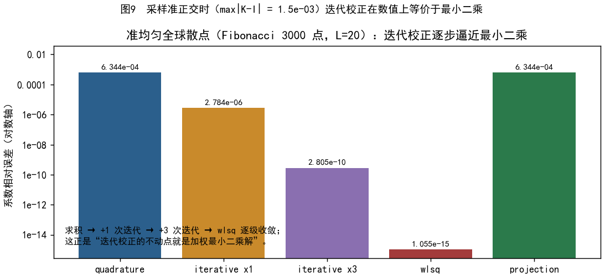
图 20 采样准正交时，迭代校正逐次逼近最小二乘解
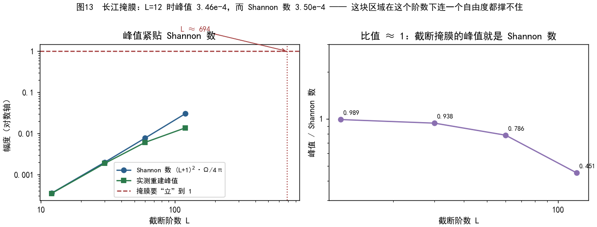
图 21 区域数据的 Shannon 上限：长江掩膜在 L=12 时峰值 3.46e-4 已贴住 Shannon 数 3.50e-4
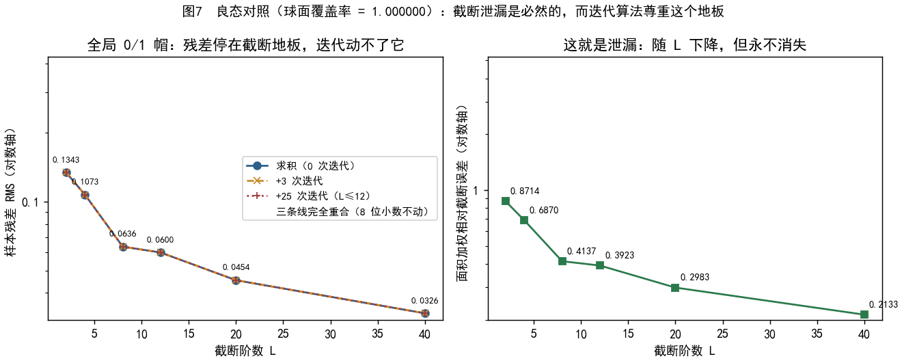
图 22 截断泄漏是地板：全局 0/1 帽的残差停在截断地板，迭代算法动弹不了它
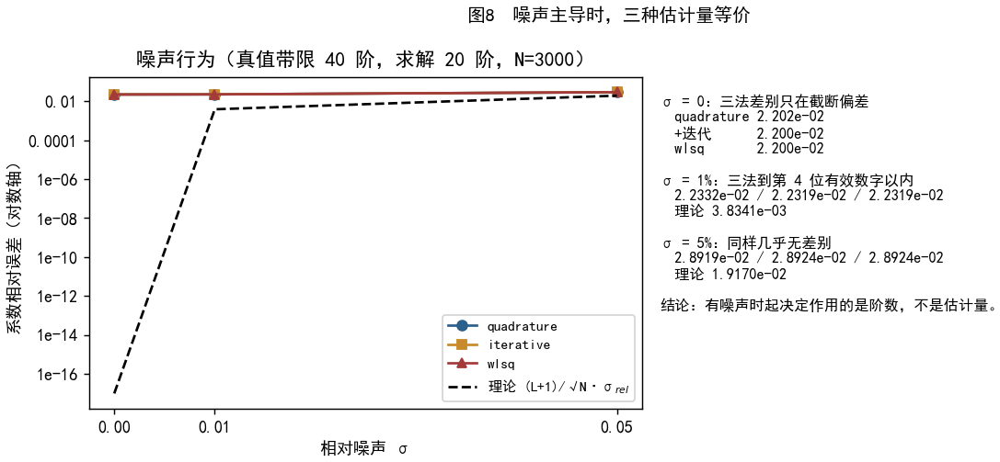
图 23 噪声主导时三种估计量等价：决定精度的是阶数，不是算法
诊断报告页签逐项列出，关键四项：
| 指标 | 怎么看 |
|---|---|
| 求积完备性 max|K−I| | < 1e-2 ⇒ 采样近似正交，纯求积就够； 明显大于 ⇒ 求积有混叠，必须用最小二乘 |
| 覆盖率 | = sum(w)/4π。< 0.999 ⇒ 只覆盖部分球面，
结果是「区域外为 0」的全球系数，速度要谨慎 |
| 条件数 | > 1e8 ⇒ 双精度已耗尽，必须降阶或加正则化 |
| 推荐 nmax | 按点数与覆盖率给的经验上限；比它高就是在解噪声 |
报告底部还会给出中文警告（覆盖率不足、超定比 < 2、Shannon 数过小、条件数过高）， 有警告时用红色列出。
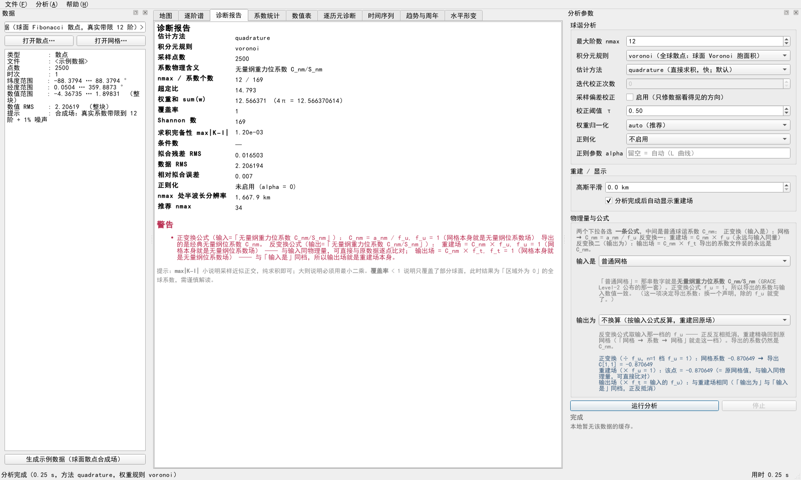
图 24 诊断报告页签：估计方法、求积完备性、条件数、推荐 nmax 与警告
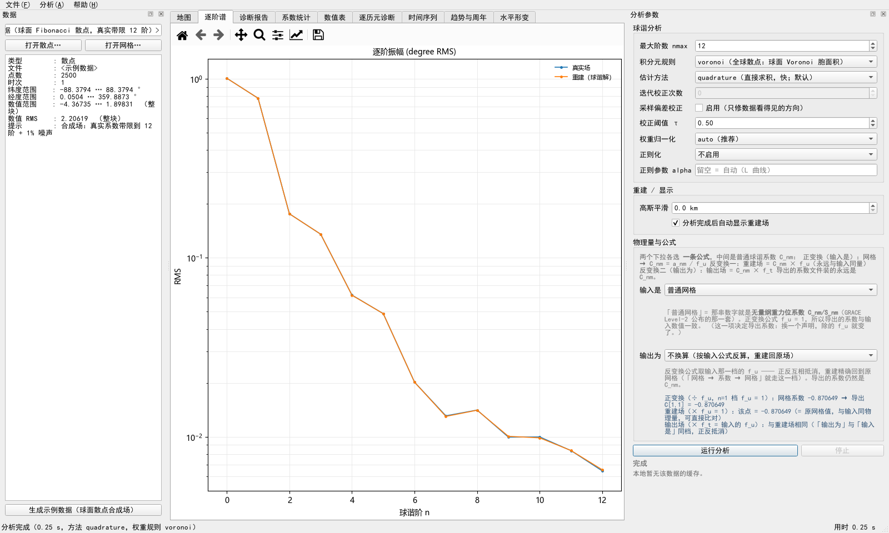
图 25 逐阶谱页签：逐阶功率与拟合残差
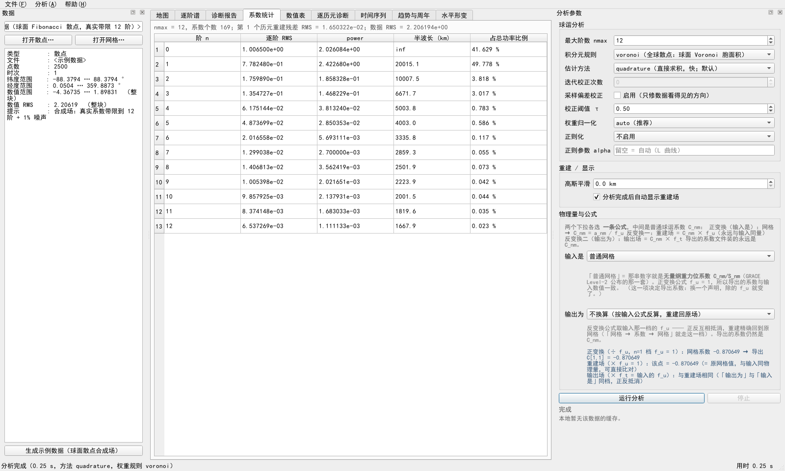
图 26 系数统计页签：C_nm / S_nm 的数值表
| 入口 | 格式 |
|---|---|
| 文件 → 导出球谐系数 | .sh/.txt/.csv（三角布局，与
gridSHconvert / m2py 兼容）、.gfc（ICGEM/GFZ）、
.npy、.npz |
| 文件 → 导出重建场（与输入同量） | 网格：.nc /
.grd；散点：.csv / .txt /
.npy |
| 文件 → 导出输出场（按「输出为」） | 同上；量纲由「输出为」决定 |
| 文件 → 导出诊断报告 | .json（可程序化处理）/
.md |
| 文件 → 导出水平形变（当前历元 / 时间窗内逐时次） | 每个时次
3 个文件：u_N / u_E / |u_h|
（单位 m）。网格写 .nc（变量名 uN/uE/
umag）、散点写 .csv（lon,lat,值）；
逐时次那条可暂停 / 继续 / 停止 |
| 数值表页 → 复制 / 导出 CSV | 整块场的数值表。格点数超过 3 万时自动抽稀（并在页面上写明抽样步长，免得把抽稀表当成全分辨率） |
| 地图页 → 导出 GIF… | 当前时次范围的动画；帧数 = 范围内的历元数 （不需要额外的视频软件） |
| 地图页 → 逐时次导出… | 范围内每个时次各写一个文件：
网格 .nc / .grd、散点 .csv；
可暂停 / 继续 / 停止 |
| 逐历元诊断页 → 导出 CSV | 逐历元诊断表（日期、相对 RMSE、C00、 残差 RMS、可疑标记） |
| 时间序列页 → 导出 CSV | 当前曲线（时次 + 数值） |
.gfc 是单历元格式。多时次数据导出 .gfc 时，软件用的是
当前时次；需要全部时次请选 .npz，或用上面的「逐时次导出」。
Q：为什么中文显示成方框？
A：绘图库自带的字体没有中文字形。程序启动时会自动挑选系统里安装的中文字体
（Microsoft YaHei / SimHei / Noto Sans CJK / PingFang 等）；如果机器上一个都没有，
装一款中文字体即可。
Q：地图上没有海岸线？
A：检查「海岸线」复选框。海岸线数据随程序分发，不需要联网。
Q：地图上出现「飞线」（横穿整幅图的长直线）？
A：这是经度跨越 ±180° 时折线被错误连接造成的。本程序已经在渲染前检测相邻点的经度差，
凡超过 180° 的地方插入断点，所以正常数据不会出现；如果你自己处理过的数据仍有飞线，
通常是经度用了 0…360 而纬度范围与之不匹配，把经度归一到
−180…180（或反过来统一）即可。
Q：分析跑很久，能停吗？
A：能。「停止」是协作式取消：程序会在阶数循环、法方程组装、迭代求解处检查取消
标志。已经进入的单次大规模数值运算无法中断，所以可能要等当前一步结束。
Q：nmax 设很大但结果很差？
A：看诊断报告的「推荐 nmax」和「条件数」。阶数超过采样能支撑的上限时，解会去拟合噪声，
系数范数会爆炸。
Q：区域数据怎么都做不出全球系数？
A：这是原理性限制，不是软件问题。区域数据在数学上欠定；一个占球面 4.3% 的球冠
连 degree-4 的场都恢复不了（低阶场弥散在全球，集中因子只等于面积占比）。所以本程序
只给「区域外为 0」的全球系数 + 覆盖率与泄漏量级，并明确警告；真正的区域反演需要另
一套方法，不在本程序范围内。
Q：「批量分析」和「逐个时次点运行分析」结果一样吗？
A：一样，逐位相同。批量只是把积分权重与法方程只组装一次，所以快得多；
每个历元的方程与单次分析完全一致。它跑在独立子进程里，出问题也不影响界面。
Q：为什么我的结果和别人的产品整体差一个常数倍（例如 3.5 倍）？
A：先查归一化口径，不要急着怀疑算法。同一个物理场，有人用
「4π 归一化」，有人把归一化因子折进系数或公式里，两边的数就会整体差
√(4π) ≈ 3.545 倍（实测就是 3.54）；这属于约定差异，不是谁算错了。
判断方法很简单：图形应该高度相似（相关系数接近 1），只是整体标度不同。
如果图形也对不上，那才是物理或处理口径的问题。
Q：趋势与周年页里的相位图为什么有大片空白？
A：那里是故意留白。振幅接近 0 的格点上「峰值出现在第几天」没有意义，
程序把振幅很小的格子遮掉并在标题里写明遮了多少。想看到全部格子可以调低这个门槛，
但请记住：那些格子的相位是噪声，不是信号。
Q：时间序列曲线上的点比我数据里的历元少？
A：那一段范围内的历元没有全部参与 —— 缺测历元（整列无效值）会被排除，页面会写明
实际用了多少个历元。程序不会把缺测当成 0，也不会把它当成等间隔的一个点。
Q：结果量级看起来差了 100 倍（例如形变 RMS 是 86 mm 而不是 0.9 mm）？
A：先看左侧数据摘要里的「变量单位」。SHKit 的正变换、反变换以及各物理量之间的
换算全都是线性的，所以输入什么单位，输出就是同一套单位的倍数 —— 往返
（原始 ↔ 重建）、EWH ↔ geoid ↔ 形变之间的比例都不受单位影响，不需要做任何换算。
唯一与单位有关的是打印出来的绝对物理量（m / mm 标签）和
「真实 GRACE 应在 mm 级」这类按米写的量级自检：文件声明的若是 cm，
这些数字要按 cm 读（÷100 才是米）。水平形变页遇到这种情况会在数值后面写明。
Q：播放动画（或拖动时次）时，只有「原始场」在变？
A：那说明手上只有"某一个历元"的系数。现在多时次数据点一次「运行分析」就解完全部
历元（也可以到「逐历元诊断」页点「批量分析」，两者同一个求解），之后重建场/差值/
输出场会随滑块与播放逐历元重算，标题上标出用的是哪个历元；逐历元系数还会缓存到
本地，下次打开同一份数据（同一套参数）直接读，不必再解一遍。
Q：「显示」切到重建场，图却还是原始数据（或者播放时每一帧都一样）？
A：这是修掉的一个真问题，现在有四条保证：
① 一次解完，不逐个补算：需要逐历元系数时（切「显示」、播放、导出）程序
一次解完全部历元 —— 固定成本（积分元、法方程）只付一次，每历元边际成本毫秒级，
所以"解一个"和"解全部"几乎一样贵；解的过程显示在进度条上，提示行写明"正在一次解完
N 个历元…"；
② 没有系数就不画：还没有系数时，地图上写的是"第 k 个历元的…还没有系数，正在
一次解完 N 个历元…"，不会拿原始数据冒充；
③ 不拿别的历元顶替：换到别的历元一律按该历元的系数重算，算完自动换成该历元的图；
④ 每一帧都是它自己那个历元：不会把同一张图重复放或拿原始图顶上。
「导出 GIF…」与「逐时次导出」都会先一次解完再导；逐时次导出写出的每个历元文件里是
它自己的场（不会把同一个场写给每个历元）。
Q：结果缓存在哪？会不会"改了参数拿到旧结果"？会不会无限涨？
A：缓存写在数据文件旁边（<文件名>.shkit-coeffs.npz）；数据目录不可写时
退到用户缓存目录，并在状态栏写明。键包含源文件的 size / mtime / 前 64 KB 的内容指纹
与全部影响系数的参数（含高斯平滑半径与输入/输出物理量），任一项不同就不算
命中、直接重算并覆盖 —— 所以不会串。键里不含路径，所以数据（连同旁边的缓存）
拷到别的目录/别的机器仍然命中。命中时状态栏与「逐历元诊断」页都会写明"这是本地缓存、
不是本次重算"，进度条推到 100% 并注明"本次未重算"。
载入数据时，如果参数与缓存里的不一致，界面会先把参数（含「输入是」）切回缓存 那一套，并在状态栏与参数面板写明"已按这份缓存切回参数"—— 于是点「运行分析」直接读 缓存、不重算。（「输入是」是公式的一部分：同一块网格声明成 geoid / EWH / geopotential 除的因子不同、系数也不同，所以它必须在缓存键里；正因为如此，默认值与你上次用的不一致 时就需要自动切回来。）
有缓存时点「运行分析」会先问你一句（「批量分析」同理）：对话框写明这份缓存 写在哪儿、多大、哪时候写的、用的是哪套参数、与当前界面参数是否一致，然后给三个选择 ——［直接读缓存（不重算）］（默认）、［重新计算（覆盖缓存）］、［取消］。选重算会 按当前界面参数解一遍整条序列并把缓存覆盖成新的；选取消则缓存不读、也不重算，内存里的 结果保持原样。导出 GIF 与切视图时的自动补算不会弹这个框（那里插一个模态框只会把 人卡住），它们直接用缓存并在状态栏说明。想用别的参数：改完直接点「运行分析」，会按新 参数重算并覆盖缓存（这时不弹框 —— 你刚刚设的参数就是你要的）。
增长性分两处，都有上限：数据旁边一个数据集一份（改参数覆盖同一文件，
单份上限 256 MB，超了不写盘并说明）；用户缓存目录是"数据集 × 参数"一份、
本来会一直涨，现在总量上限 512 MB，每次写盘后按最久未用自动删到 80% 并写明删了
几份。参考大小：nmax = 60 / 256 历元的一份实测 7.0 MB。
文件 → 「本地缓存…」显示当前数据那份缓存的大小与时间、用户缓存目录的份数/总量，
可就地清理（删除当前数据的缓存 / 清空用户缓存目录）—— 缓存只是省时间，删掉不影响
已经算出来的结果，下次「运行分析」会重算并重写。参数面板底部常驻一行显示占用，
并如实说明能不能命中：如果旁边那份缓存与当前文件/参数对不上，它会直说"不会命中，
会重算并覆盖"，不会让你以为不用等。
Q：点了「运行分析」前几秒进度条不动，是在卡吗？
A：不是。有两段本来就没有可信百分比的工作：① 懒加载的大文件要把全部时次读进来
（真实 mascon 实测约 3 秒）；② 独立进程模式下要把数据交给子进程。这两段显示的是
会自己动的忙碌条 + 一句话说明（"正在读取全部时次 128/256…""正在把 256 个历元的
数据交给独立进程…"），求解器一报出真实百分比就自动切回百分比条。空闲时进度条直接隐藏，
不留一根 0% 的条；缓存命中时推到 100% 并写明"本次未重算"。
| 作者 | 彭桢燃（Zhenran Peng） |
|---|---|
| 单位 | 中国地质大学（武汉） China University of Geosciences (Wuhan) |
| 邮箱 | zhenran.peng@cug.edu.cn |
| 电话 | 15927402265 |
| 公众号 | 地球重力与人类生活（TVGG），微信扫一扫： |
本程序使用了若干开源软件组件，并在开发过程中使用了 Natural Earth 110m 海岸线数据 与 PREM 载荷勒夫数表（Wang et al. 2012）。这些组件与数据的著作权归各自作者所有， 许可全文随程序分发，可在 帮助 菜单中查看。